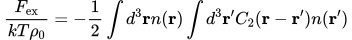
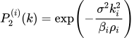
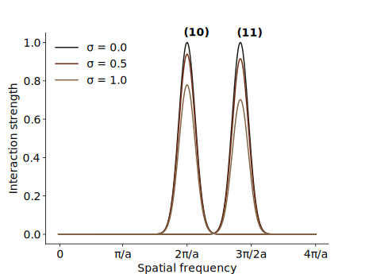
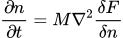
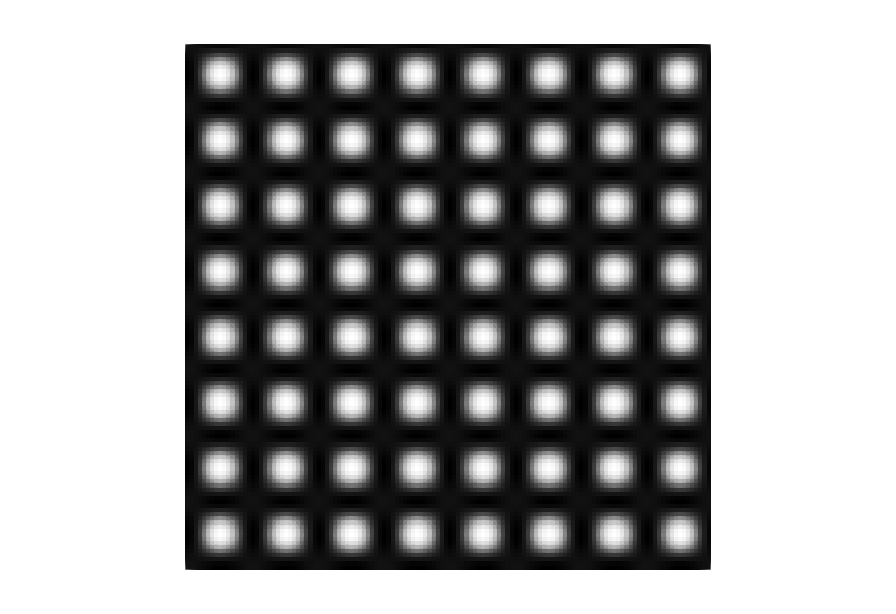
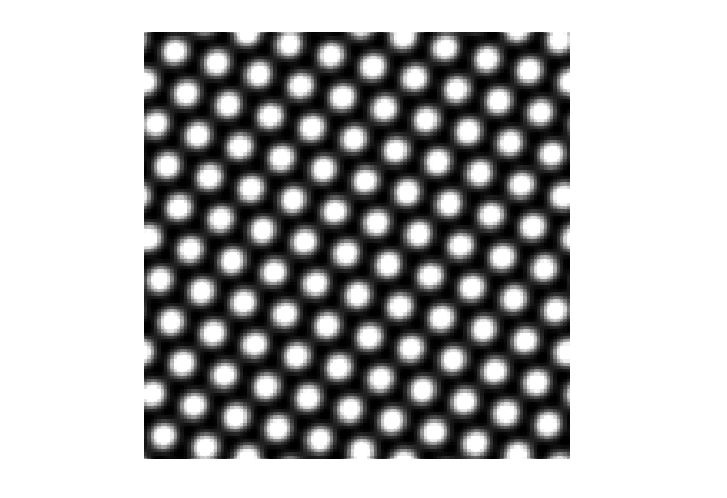
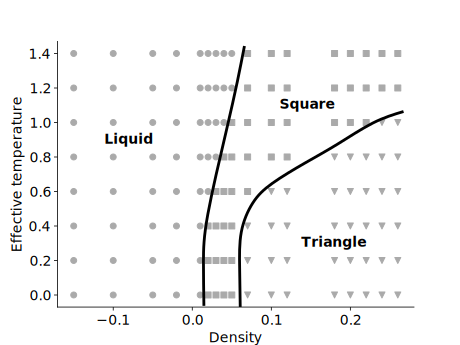

Single Component Phase Field Crystal

Phase Field Crystal (PFC) methods have emerged as a popular tool for
studying crystalline systems. Here, we use a formulation originally proposed by Greenwood
where n is a spatially varying field. It is related to the density ρ via n = ρ/ρ0 - 1, where ρ0 is a reference density. The ideal part of the free energy is responsible for driving the field n towards a uniform field (n = 0 everywhere). To facilitate the formation of a particular structure, there is an excess energy term
where C2 is a pair correlation function defined via its fourier transform. The fourier transformed pair correlation function is given by the numerical envelope of the a set of Gaussian peaks (i = 0, 1, 2...)
ki controls the location of the peaks and αi defines the width of the individual peaks. Furthermore, αi can be fitted to elastic properties [1]. The effect of temperature, is mainly to excite vibrations. Thus, temperature is incorporated by multiplying the fourier transformed pair correlation functions by a prefactor to each peak. The functional form of the prefactor is the same as the Debye-Waller factor
σ demotes an effective temperature, βi is the number of equivalent planes and ρi is the atomic density in the plane. We now show an example where we include two peaks in the correlation function (10) plane and the the (11) plane. There are 4 (10) planes and 4 (11) plane. In a square crystal the atomic density in the (10) plane is 1 and in the (11) the density is 0.707 (one divided by the square root of 2). The fourier transformed pair correlation function is shown at different temperatures below
By starting at a random concentration and solving the field n using conservative dynamics
where F = Fid + Fex. Depending on the average density and the temperature different crystal structures will emerge.
|  Square lattice |  Triangular lattice |
|---|
By varying the effective temperature and the mean density, we can map out which the regions where the different phases are stable.
Combinations of σ and the mean density that led to a square lattice, are marked with a square symbol. Points leading to a triangular crystal structure are marked with a triangle. Finally, if no crystal structure emerged, the point is marked by a circle.